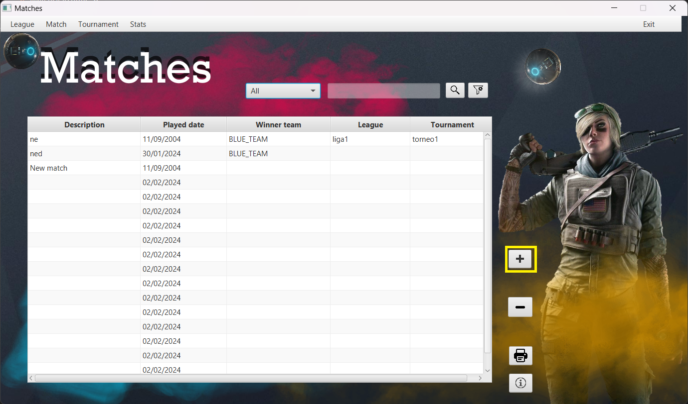

Matches Window User Manual
Introduction
Welcome to the Matches Window User Manual. This document provides essential information on how to use and
navigate through the Matches Window in your application.
Table of Contents
- Getting Started
- Navigating the Matches Window
- Features and Options
1. Getting Started
The Matches Window is a central hub where you can view and interact with match-related information. To get
started, follow these steps:
- Log in to your application.
- Navigate to the Matches Window using the provided menu or interface.
2. Navigating the Matches Window
The Matches Window is designed to provide an intuitive and user-friendly experience. Here are some tips for
navigating through the window:
- Use the navigation bar to switch between different sections.
- Click on a specific match to view detailed information.
3. Features and Options
Add matches

The Matches Window comes with various features and options to enhance your experience. Some notable features
include:
- Viewing a list of upcoming matches.
- Filtering matches based on specific criteria.
- Accessing detailed information about each match.